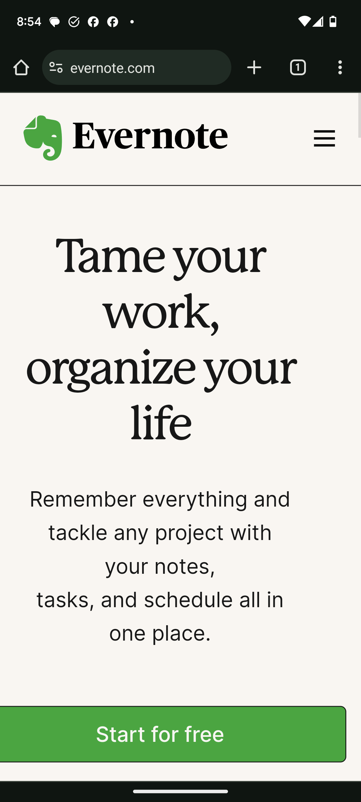
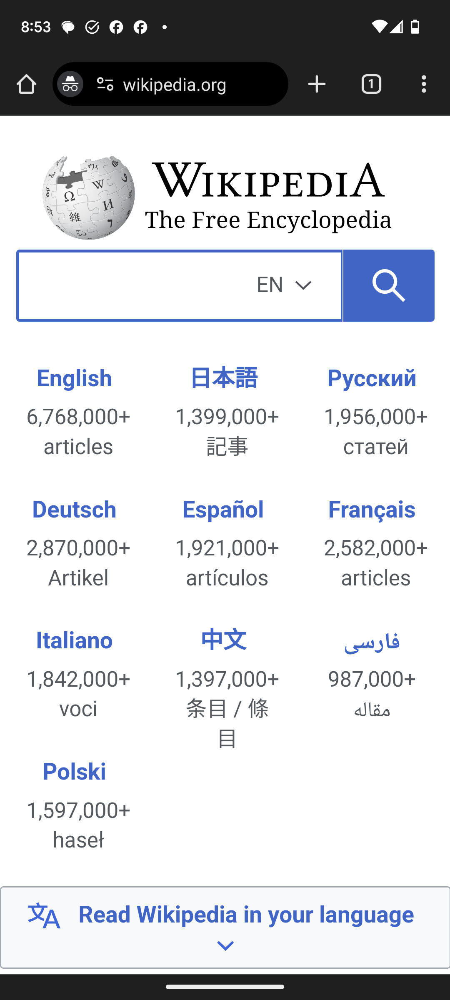

Contrast
Evernote
evernote.com

Contrast is using different visual elements to draw attention to the different features of the page. Evernote does this through the use of their iconic green. By reserving this color for their logo and the Start Button, they draw your focus to the most important features.
Repetition
Wikipedia
wikipedia.org

Repetition is the repeating of common elements to give a consistent feel to the page. Wikipedia does this by repeating the font and the layout of the different options on the homepage. Even with languages that require a different font family to function, the color and layout allows the page to feel harmonious and simple in design.
Hick's Law
pinterest.com
Hick's law is the relationship between the number of choices a person is offered and the amount of time it takes for them to make a desicion. Pinterest wants those visiting its site to make a quick decisision and so they did that by giving their users a limited number of choices.